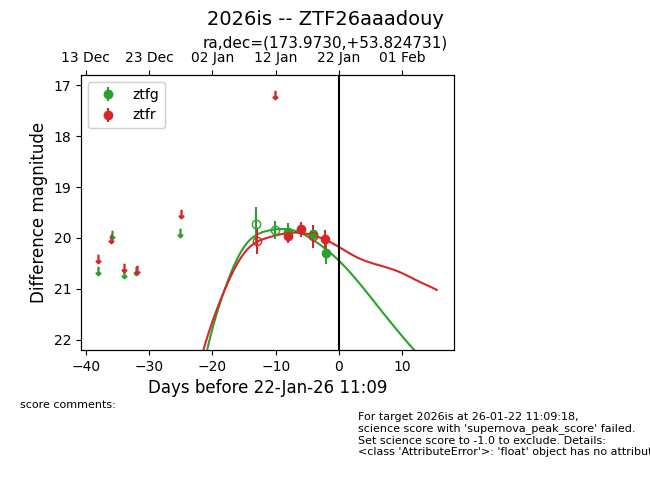
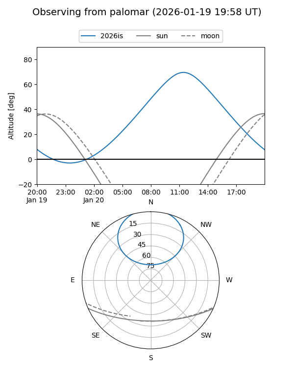

2026is
Target 2026is at 2026-01-14 12:20
Aliases and brokers:
FINK: link
Lasair: link
ALeRCE: link
TNS: link
YSE: link
alt names
ZTF26aaadouy (ztf,fink_ztf)
2026is (tns,yse)
Coordinates:
equatorial (ra, dec) = 173.9730,+53.82473
equatorial (HMS+DMS) = 11:35:53.51,+53:49:29.03
galactic (l, b) = (145.3232,+59.89601)
Flags:
Photometry:
last ztfg=19.89, ztfr=19.96
1 ztfg, 1 ztfr detections
Lightcurve

Visibility


Additional plots